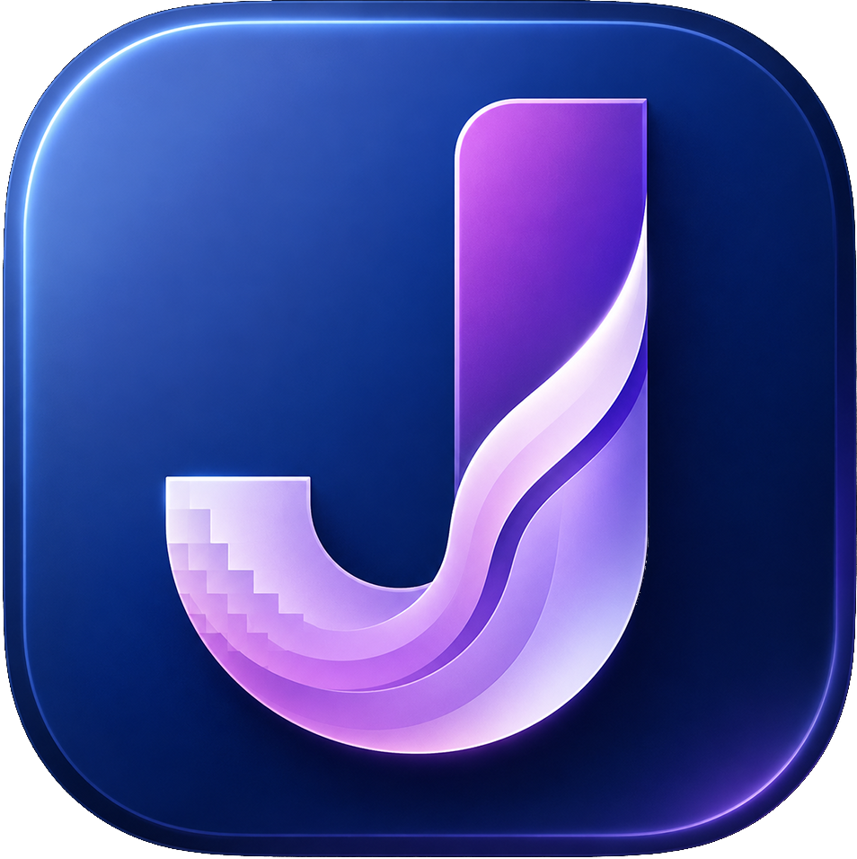
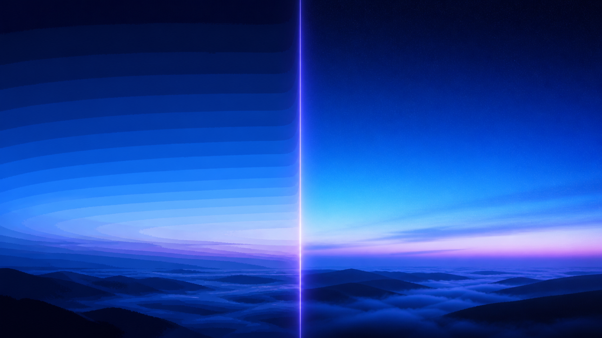
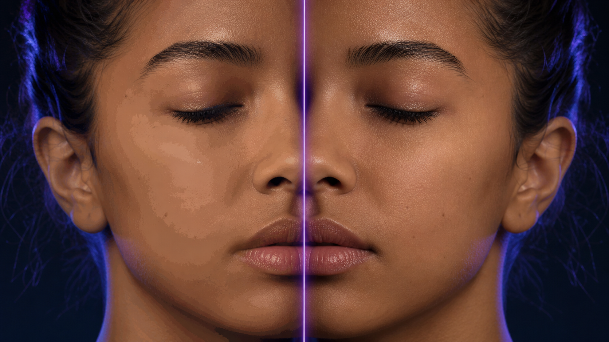
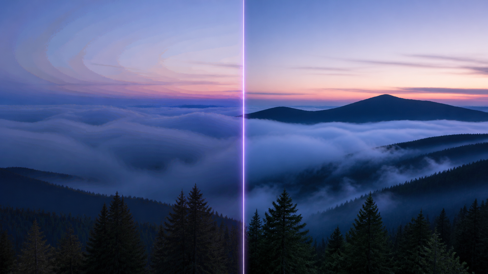
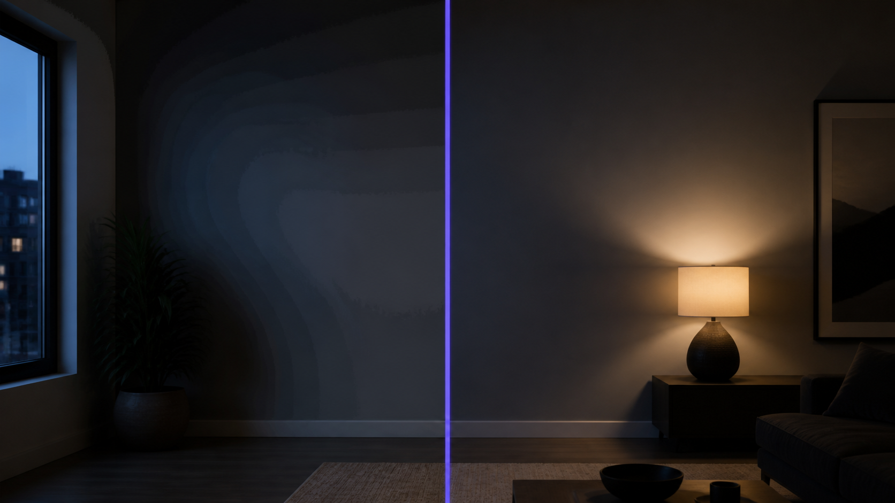
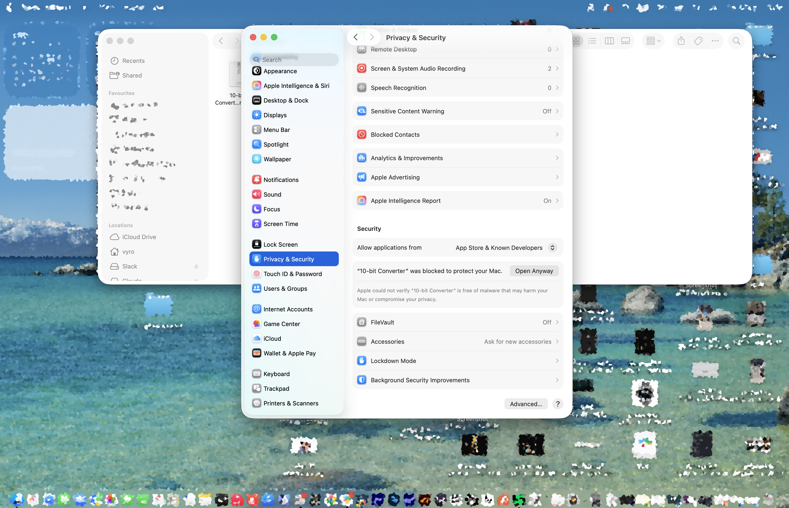

Jazib Ali 360 · macOS

Make AI gradients behave.
10-bit Converter reduces visible colour banding in 8-bit AI footage and creates a cleaner 10-bit master for the grade still ahead.
Can’t use YouTube? Play the direct product film instead.
Your footage stays on your Mac.
10-bit Converter processes selected files locally. There are no accounts, uploads, cloud rendering, or analytics. Its interface communicates only with a local Python controller on 127.0.0.1, which runs the bundled FFmpeg tools on your machine.
Why this exists
More tonal steps. Fewer visible stairs.
Colour banding is what happens when a smooth change—think a sky, mist, a shadow, or a skin-tone rolloff—has too few tonal steps and turns into visible stripes. An 8-bit file has 256 code values per colour channel. A 10-bit file has 1,024: four times as many steps per channel and 64 times as many possible RGB combinations.




These are original photorealistic illustrative use cases, generated for this project to explain the problem—not claims about a measured output test or specific real footage.

Important: converting an 8-bit file to 10-bit cannot recover colour information that was never captured. 10-bit Converter reduces visible banding with debanding and dither, then writes a more resilient 10-bit master for the grade or delivery ahead. Facts and reference graphic: Dare Dreamer, UniFab, and Deep Image Debanding. See the full source ledger.
Choose your master
Which export should I choose?
| Choose | Best for | Trade-off |
|---|---|---|
| HEVC Main10 (.mp4) | Sharing, review links, and space-conscious delivery. | Smaller 10-bit files; compatibility still depends on the recipient’s player and hardware. |
| ProRes 4444 (.mov) | Taking the clip into a colour grade, VFX, or an edit that needs a robust intermediate. | 10-bit 4:4:4 output with much larger files—give it plenty of disk space. |
Observed release benchmark
A quick real-world ProRes run.
One observed release test, shared to set expectations—not a guaranteed benchmark. Export time varies with source resolution/codec, deband settings, destination storage, background load, and the selected engine.
Under the hood
A practical cleanup pass, not a magic button.
App architecture
A small local stack with no cloud in the middle.
No smoke and mirrors
Known limits
FAQ
The useful answers before you press export.
Does this create real 10-bit video?
Yes: the output is encoded as a 10-bit HEVC Main10 or 10-bit 4:4:4 ProRes master. But that does not mean lost tones from an 8-bit original magically return; the app reduces visible banding and preserves a better container for the work that follows.
Why is my file huge?
ProRes 4444 prioritizes a robust grading intermediate over small files. Use HEVC Main10 when file size and sharing matter more than edit-friendly 4:4:4 output.
Why is it slow?
Debanding, dithering, high-quality processing, two-pass delivery, and ProRes all cost processing time. Resolution, clip duration, storage speed, and the CPU/GPU available also affect the export.
Will it fix every clip?
No. Very compressed footage, severe posterization, aggressive grades, or another platform’s re-encode can still show banding. Test a short preview and choose the gentlest effective setting.
Built openly
Built with
- Python
- PyWebView
- FFmpeg / FFprobe
- libx265 · HEVC Main10
- ProRes 4444
- libplacebo · optional GPU
- Vulkan · optional GPU
- py2app
Keep it useful
Collaborate, support, or give feedback.
The most useful support is a real-world edge case: a troublesome gradient, a workflow this should handle better, or a hardware note that helps the next creator. Open an issue with the app version, macOS version, input codec/resolution, selected export profile, and relevant error text. Please do not upload private footage or credentials.
Participation is covered by the Code of Conduct. For security concerns, do not post sensitive details in a public issue.
First launch on macOS
macOS needs your okay once.
This release is open source but not yet signed or notarized by Apple. macOS may block the first launch. That is expected; the converter runs locally and does not ask for access to your files beyond the videos you choose.
- Try opening 10-bit Converter once.
- Open System Settings → Privacy & Security.
- Scroll to the Security section and select Open Anyway next to the 10-bit Converter notice.
- Confirm Open. You only need to do this the first time.

The “Open Anyway” button appears after macOS has blocked the app once.